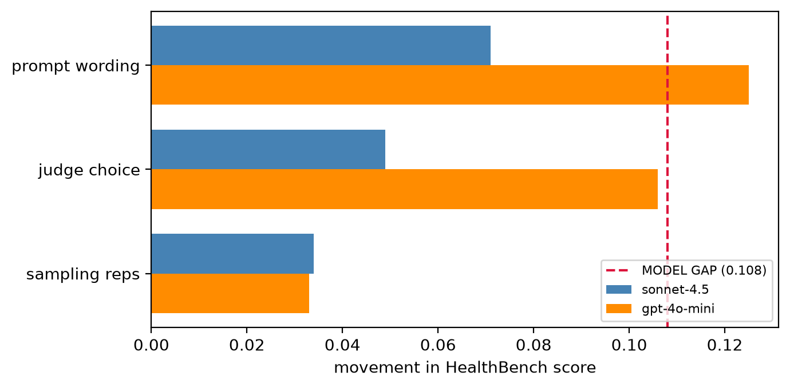
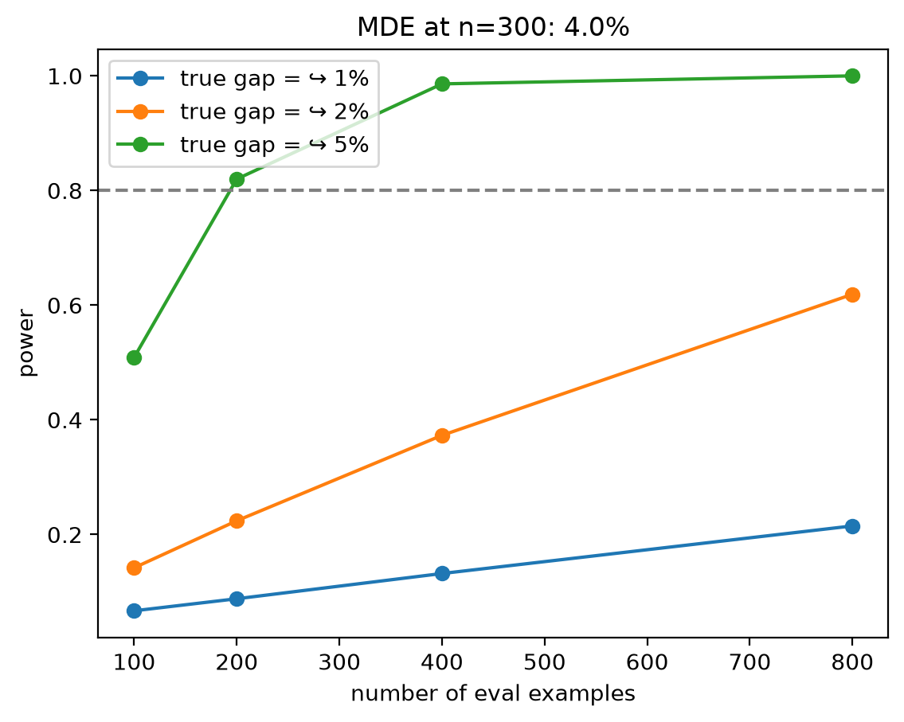

This toolkit re-grades HealthBench's physician-labelled meta-evaluation with a grid of LLM judges and measures what usually goes unmeasured: how well judges agree with physicians, how much a model's score moves when you change the judge or the prompt wording rather than the model, and whether a typical eval even has the statistical power to call a winner. The headline: switching the judge's prompt wording moves a model's score almost as much as the entire gap between the two models being compared.
0.601
Best judge's Cohen's κ vs physicians (gpt-4.1)
91%
Of the model gap reproduced by prompt wording alone
≈0.035
Minimum detectable gap at n=402, 80% power
2×
Less consistent on harm/safety criteria
Report card
1Agreement with physicians
Track A, 2,000 physician-labelled items.
Judge
% agree
Cohen's κ
macro-F1
openai/gpt-4.1
0.892
0.601
0.801
google/gemini-2.5-flash
0.885
0.497
0.747
anthropic/claude-sonnet-4.5
0.773
0.407
0.690
The strongest response model (sonnet-4.5) is the weakest judge, highlighting that grading and answering are different skills. Every judge collapses to κ ≈ 0.09–0.15 on judgment-call criteria ("was this complex response appropriate?") while managing 0.5–0.8 on factual ones.
2Uncertainty
Clustered 95% CIs, resampling conversations rather than criteria, since criteria within a conversation are correlated and treating them as independent understates uncertainty.
gpt-4.1's agreement of 0.892 [0.877, 0.908] sits entirely above sonnet's 0.771 [0.750, 0.793], showcasing a real model ranking difference, not just noise.
3Sensitivity
How far a model's HealthBench score moves from choices that shouldn't matter, against the real model gap:
Source of movement
Spread
vs model gap
sampling reps (temp 1.0)
0.034
31%
judge choice
0.078
72%
prompt wording
0.098
91%
model gap
0.108
—

For the weaker model, prompt-wording spread (0.125) exceeds the model gap entirely. Its score depends more on the judge prompt than on which model it is.
4Power
With n=402 examples, the minimum detectable gap at 80% power is ≈0.035. The observed 0.108 model gap clears that bar, but any gap below ~0.035 would not be detectable at all and gaps that small are common on saturated leaderboards.

Power curves by eval size. A true 2% gap stays underpowered even at n=800.
5Other findings
Verbosity bias is real and systemic. Conditioning on physician labels, longer responses are graded "met" more readily, with the strongest effect in the best judge.
Judges are ~2× less consistent on harm/safety criteria (25.9% vs 12.2% verdict-flip rate), which is exactly where reliability matters the most.
Clustering correction cuts both ways. Its direction depends on the estimand: it widens single-model CIs but tightens the paired model-difference CI.
Methods
Ground truth is multi-physician. Track A re-grades triples that physicians already labelled in the publicly released dataset; the work audits agreement and characterizes disagreements rather than acting as a sole grader.
Every CI is clustered by conversation.cluster_bootstrap resamples whole conversations.
Scores use the HealthBench equation. Sum of points for met criteria over sum of positive points, clipped at 0. Negative-point (harm) criteria can only subtract.
Every random step is seeded and every figure regenerates identically.
Using it on another eval
The report card works on any grades in the same row schema; a different rubric produces the same report.
import pandas as pd
from judgeaudit import report_card, cluster_bootstrap, power_curve
track_a = pd.read_json("your_grades.jsonl", lines=True) # judge vs human labels
print(report_card(track_a)) # agreement + uncertainty
Track A rows (agreement): judge_model, variant, grade, physician_label, prompt_id.
One benchmark, one language. Everything here is HealthBench, English-only. The dead zone on judgment-call criteria and the verbosity tilt may not transfer.
Physician labels are not perfect ground truth. Panels are 2–3 physicians and disagree often (evenly-split panels are dropped). Some apparent judge errors are label noise, but the labels still set the ceiling on measurable agreement.
Self-preference is underpowered. At n=100 the judge×model interaction CI includes zero, and no judge in the grid is also a response model, so only provider-level affinity was testable.
Two response models, a wide gap. The power and variance results are anchored on one model pair.
The config space is small by design (≤3 judges, ≤3 prompt variants), so the reported spreads are minimums. A larger grid could only widen them.
Everything here is reproducible. Code and the full analysis notebooks are on GitHub. Happy to discuss the results or walk through the implementation.